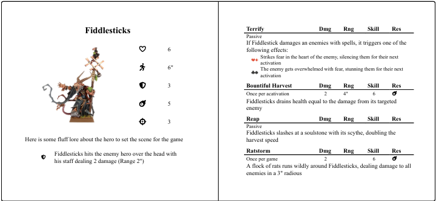
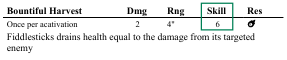
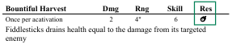

Dueling
A duel is started when a hero declares an attack (Ability or Basic) against another hero. The attacker gets the role of “Attacking Hero” and the target gets the “Resisting Hero” role
The following Hero card will be used for all the examples below:

Dueling steps
The first step is to determine the prerequisites of the duel. Lets look at the ability Bountiful Harvest as an example:
-
Which skill level does the Ability have?

-
Which resistance type does the defender use?

-
Are there any heroes with advantages or disadvantages?
-
Does any player want to discard a cheating card (value between 2 and 5) to gain the upper hand in the duel?
These serve as the base values for the duel.
Let's assume the following in this example:
-
Attacking hero has 6 in skill level with no advantage or disadvantage. The attacking hero discards a 2♠ from the cheating hand.
-
Resisting hero has 2 in the relevant resistance type and a disadvantage. The resisting hero discards a 5♡ from the cheating hand.
Flipping the fatecards
Each player flips the top card/cards in their fatedeck to determine what duel score they get.
The attacking hero flips an 8♡ - adding that to the skill level + the discarded cheat card for a total score of 16
The resisting hero flips two cards due to the disadvantage, 4♡ and 10♠. Forced to use the lowest value the resisting hero adds this to the relevant resistance + the discarded cheat card for a total of 11.
Cheating fate
The player with the lowest score has the option to cheat fate by playing one of the higher valued cards in their hand (6+). The resisting hero really wants their hero to survive this and chooses to do so in this case and plays the 10♣ instead of the 4♡ for a total of 17.
Now the other player (in this case the attacking player) gets to decide if they want to do the same and cheat fate. The attacking player decides that this particular duel is not that important to win and that the cheat cards might be of better use in another duel. The resisting player wins this duel: 16 vs 17.
Different outcomes
- The resisting hero wins - If (as in the example above) the resisting player wins, the entire attack gets resisted resulting in 0 damage taken.
- It’s a tie - The resisting hero takes half the specified damage if the duel results in a tie.
- The attacking player wins - The resisting hero takes full damage from the attack.
Critical hits
A critical hit occurs when the attacking hero wins the duel by 5 or more duel points. For each 5 exceeding the resisting player, one total damage is added to the attack.
Some heroes have even higher critical damages added or less points needed per crit. In those cases this is stated in the ability description.
Resolving the damage
The total damage of the duel depends on different factors:
- The outcome of the duel
- If the attacker successfully buffed the attack
- If the ability used by the attacking hero has any additional effects. For example if the suit of card flipped has any special triggers
- If the resisting hero has any additional effects in play such as shielding or passive damage decreasing abilities